Approve every change
Edits arrive as diffs, commands show what runs and where. Allow once, for the session, or deny with a reason.
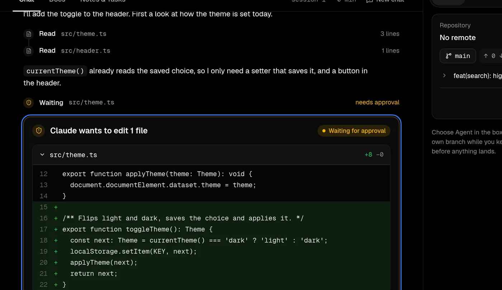
A local workspace where Claude surveys, documents and builds your projects. Nothing touches your disk until you approve it.
You read and decide. Claude does the typing.
Edits arrive as diffs, commands show what runs and where. Allow once, for the session, or deny with a reason.

Seven decision cards, then CLAUDE.md, a PRD, ADRs and the first commit.
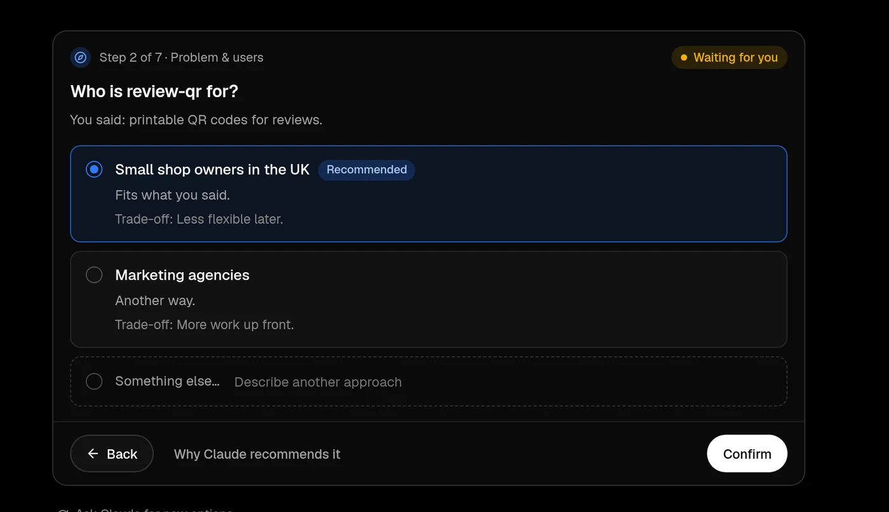
One button starts the dev server and hands you the link.
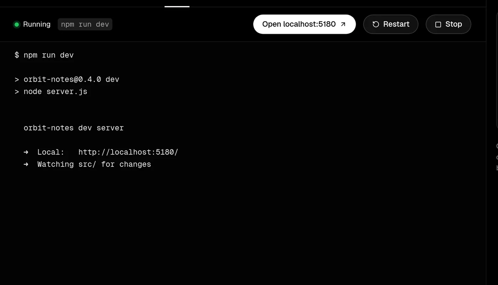
Files, lines and commands after every reply, at no token cost.
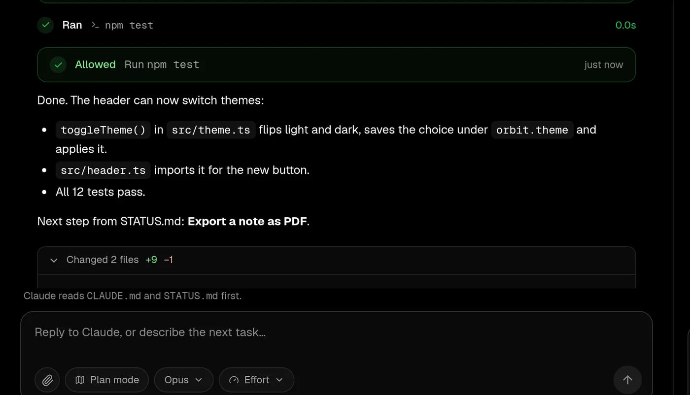
Security, tests, code health and dependencies, read-only, one click each.
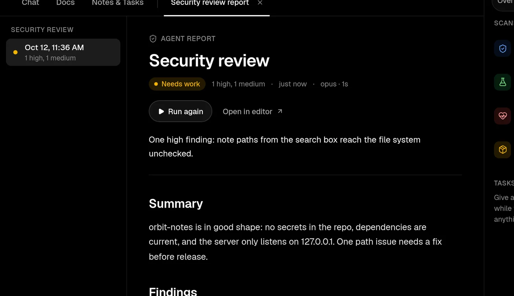
Ask what is stuck this week. It answers and proposes actions you approve.
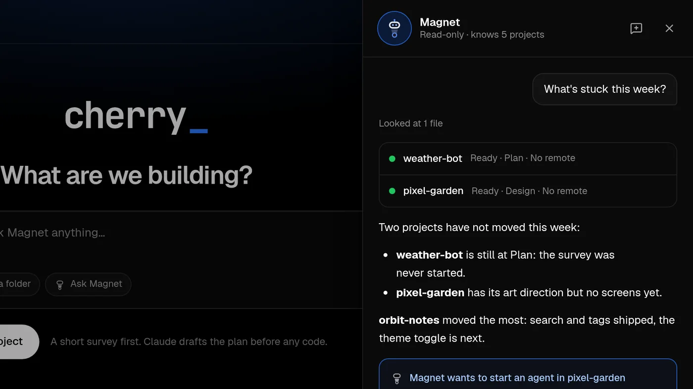
The order a careful engineer works in, made the default.
Describe the idea and answer seven short questions. Each comes with a recommended option and its trade-off.
Every real choice is written down as an ADR. Change an answer later and Cherry marks what needs a second look.
CLAUDE.md, the PRD, architecture, data model and STATUS.md exist before the first line of code.
Chat, agents and scans do the work. You approve, run it on localhost and commit in small steps.
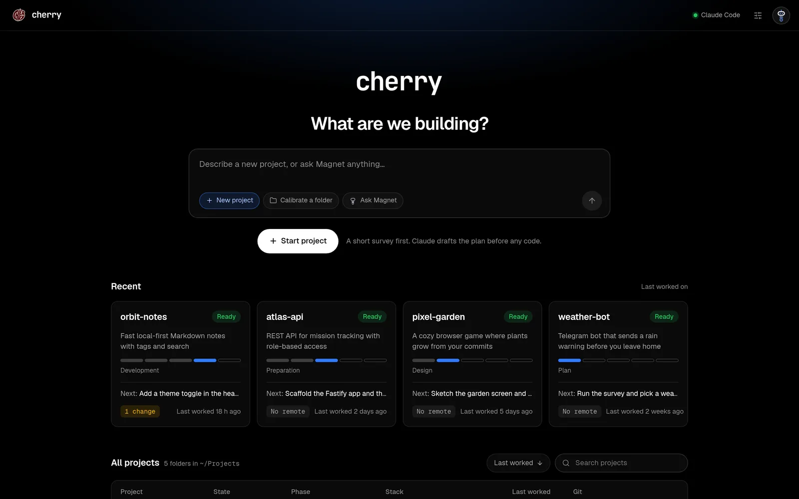
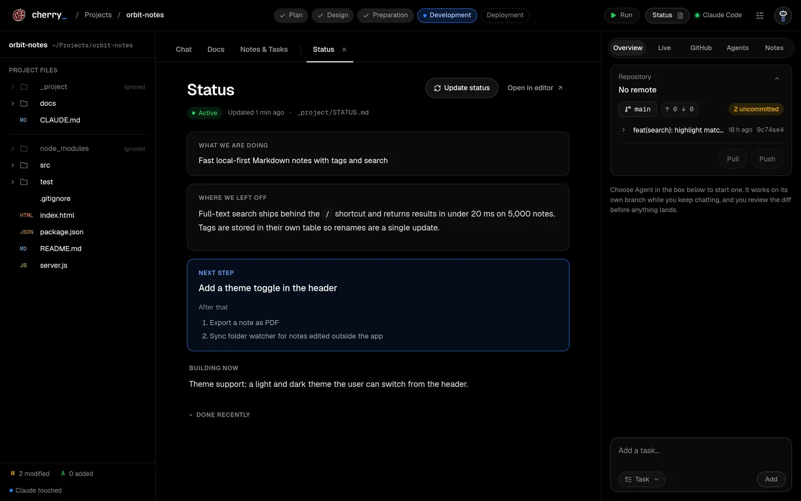
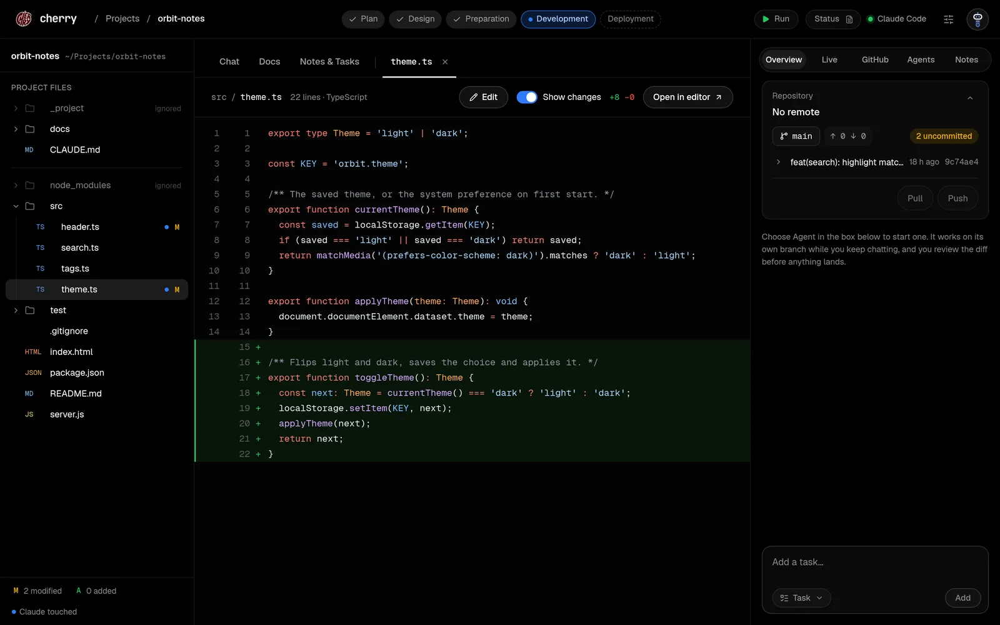
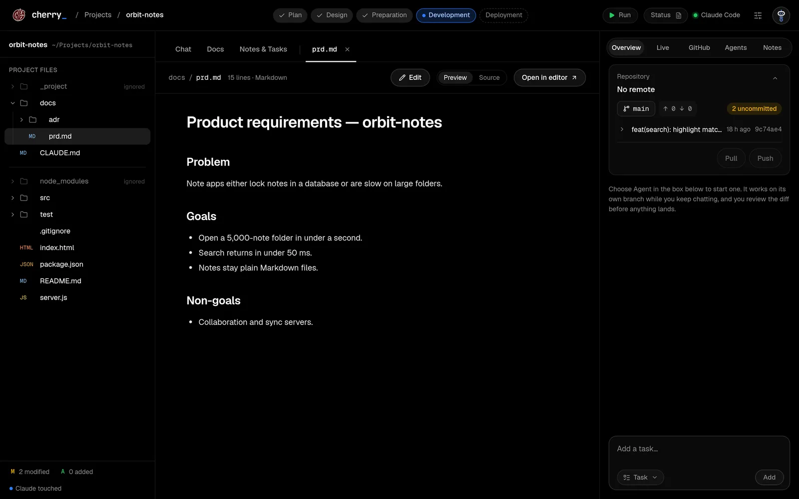
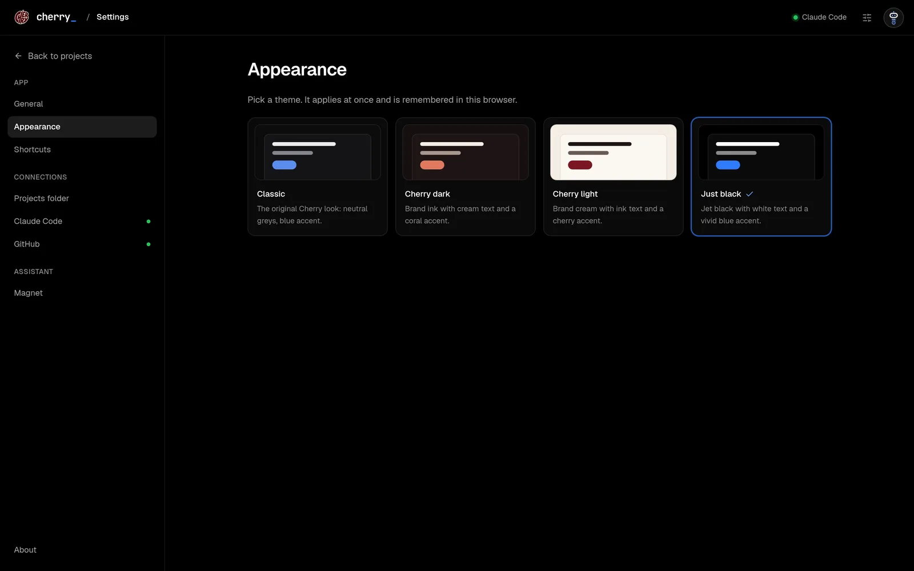
The daemon binds 127.0.0.1. Every request needs a session from a one-time login link.
sudo, force pushes to main and rm -rf outside the project are blocked outright.
.env files, keys and credentials are never read. File tools cannot leave the project.
Change summaries and Run cost no tokens. Reviews and reports run only on your click.
Linux today. You need Claude Code signed in, git, and mise or Node 22 with pnpm. The GitHub CLI is optional.
The repo also ships a Claude Code skill, so Claude can install and run Cherry for you.
git clone https://github.com/syedmehedihussain/cherry.git
cd cherry
mise install && pnpm install
./scripts/install-cli.sh
cherry